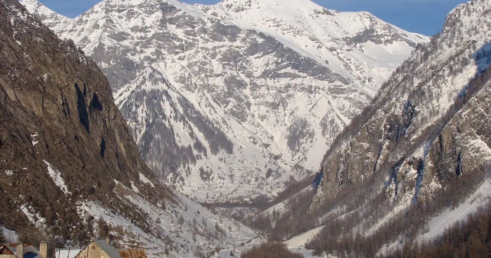

Dévoluy الاتجاه ديال التلج: يقدر يوصل ل 24–32 سم حتى ل 16 نونبر (جبال الألب)
التوقعات حتى ل 16 نونبر: 35 سم ف Orcières Merlette، 33 سم ف La Grave و 24–32 سم ف Dévoluy. الأيام اللخرين خاصهم الحذر. شحال حنا متأكدين؟ القيم ديال المحطات تقديرات ديال الموديل للجهة الفوقانية؛ محطات القياس قياسات، كل وحدة فنقطة وحدة فالتاريخ المكتوب. التأكد: مزيان فالاتجاه، أقل فكل رقم بوحدو.
شوف توقعات التلج مباشرة ديال Dévoluy فالتطبيق ديال SnowScopeالعلو ديال التلج، التنبيهات والخريطة 3D، فابور.
الخريطة ديال التلج اليوم
فالراس ديال اللائحة: La Grave، تقريبا 78 سم فالعلو. ومن بعد Alpe d'Huez Grand Domaine 52 سم و Les Deux Alpes 52 سم.
الحساب ديال اليوم فجبال الألب: 829 محطة من 1179 فيهم التلج فالعلو، و 76100 كم² ديال الأرض اللي فيها التلج.
| المحطة | العلو ديال التلج | تلج جديد، 72 س | جاي، الأيام الجاية | الفوق |
|---|---|---|---|---|
| Orcières Merlette | 35 سم | 36 سم | 35 سم | 2731 م |
| La Grave | 78 سم | 61 سم | 33 سم | 3543 م |
| Dévoluy | 7 سم | 4 سم | 32 سم | 2495 م |
| Alpe d'Huez Grand Domaine | 52 سم | 43 سم | 31 سم | 3306 م |
| Les Deux Alpes | 52 سم | 51 سم | 30 سم | 3511 م |
التوقعات باختصار
حتى ل 16 نونبر التوقعات كتعطي 31 سم ف Alpe d'Huez Grand Domaine و 30 سم ف Les Deux Alpes، والتأكد كينقص كل ما بعدنا.
المساحة البيضا فالخريطة دازت من 39090 كم² (11 نونبر) ل 76100 كم² اليوم، والتوقعات كتقول 57910 كم² نهار 16 نونبر.
التحقق من الحد ديال التلج
نهار 13 نونبر علو الجليد ف Orcières Merlette كيكون بين 2530 م و 2770 م، فوق القمة ديال المحطة (2731 م): الشتا ولا التلج المبلول يقدر يطيح فكاع البيستات.
La Grave، 14 نونبر: علو الجليد 2700 م حتى ل 3210 م. تلج مبلول لتحت، شتا حقيقية لفوق.
Dévoluy، 13 نونبر: علو الجليد 2560 م حتى ل 2980 م، فوق القمة (2495 م). الشتا ولا التلج المبلول ممكن فكاع البيستات.
Orcières Merlette حسب العلو، من الموديل ديالنا: الفوق 13 سم (2731 م)، الوسط 1 سم (2278 م)، التحت 0 سم (1826 م).
باش تبقى سالم
التوقعات ديال شي أيام يمكن تتبدل: عاود شوف الخريطة نهار قبل ما تسافر.
نصايح للي كيتزلجو
- التوقعات ديال شي أيام يمكن تتبدل: عاود شوف الخريطة نهار قبل ما تسافر.
- علو الجليد فوق آخر تيليسييج؟ توقع تلج مبلول وتزلج فأعلى بلاصة كيوصلو ليها التيليسييجات.
- كون فأول تيليسييج من بعد التلج: مع الطناش، الشمس والناس كيكونو بدلو التلج.
- قبل ما تخرج من البيست ولا دير جولة، قرا النشرة الرسمية ديال الانهيارات (الروابط لتحت).
- فعّل تنبيه ديال التلج الطري فالتطبيق ديال SnowScope باش تعرف إمتى Orcières Merlette يجيها تلج جديد.
على هاد الأرقام
العلو ديال التلج فالمحطات هو أكثر تلج فالجهة الفوقانية حسب الموديل ديال التلج ديال SnowScope (تقريبا 1 كم، الحساب ديال 13 نونبر)؛ هادو تقديرات لمنطقة، ماشي قياس فنقطة وحدة. الأرقام ديال محطات القياس مقاسة فالتاريخ المكتوب. التوقعات يمكن تتبدل. ديما شوف النشرة الرسمية ديال الانهيارات قبل ما تخرج من البيست.
النشرات الرسمية ديال الانهيارات: EAWS (Alps)
كيفاش تستاشهد بهاد المقال
للبحث، التعليم ولا الصحافة: الأرقام والرسومات تقدر تعاود تخدم بيهم بحرية تحت CC BY 4.0 مع هاد الاستشهاد.
SnowScope (2026), Dévoluy الاتجاه ديال التلج: يقدر يوصل ل 24–32 سم حتى ل 16 نونبر (جبال الألب), https://snowscope.app/blog/ar/2026/11/alps-devoluy-snow-forecast-13-november-2026.html, تشاف ف 2026-11-13
SnowScope (Atlas Labs). (2026, November 13). Dévoluy الاتجاه ديال التلج: يقدر يوصل ل 24–32 سم حتى ل 16 نونبر (جبال الألب). SnowScope snow reports. https://snowscope.app/blog/ar/2026/11/alps-devoluy-snow-forecast-13-november-2026.html
BibTeX
@misc{snowscope2026alpsdevoluysnowforecast1,
author = {{SnowScope (Atlas Labs)}},
title = {Dévoluy الاتجاه ديال التلج: يقدر يوصل ل 24–32 سم حتى ل 16 نونبر (جبال الألب)},
year = {2026},
month = nov,
howpublished = {\url{https://snowscope.app/blog/ar/2026/11/alps-devoluy-snow-forecast-13-november-2026.html}},
note = {Published 2026-11-13 13:16 UTC; accessed 2026-11-13}
}· CC BY 4.0 · الطريقة، الداتا والأدوات →
Dévoluy: التلج والحرارة حسب العلو، هاد الشتا مقارنة مع اللي فاتت (الأدوات) →
تابع Dévoluy
فابور: ميساج ملي يجي التلج، والتوقعات كل صباح.
تقارير أخرى ديال التلج

Alpe d'Huez مقابلة للشمس. كيفاش تنظم النهار بالساعة وبالعلو، مع التلج ديال 46 شتوة اللي فاتت من القرى اللي لتحت حتى ل Pic Blanc.

50 سم فالجهة الفوقانية: هادا علاش La Grave هي اللولة فاللائحة ديالنا. جمعنا العلو ديال التلج ديال اليوم، والتلج الجديد ديال 72 ساعة، والتوقعات باش …

حتى ل 10 نونبر، التوقعات ديالنا كتعطي 36 سم ف Orcières Merlette، 33 سم ف Les Deux Alpes و 32 سم ف La Grave. الأرقام ديال المحطات ديال التزلج تقديرات …